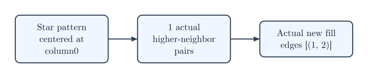
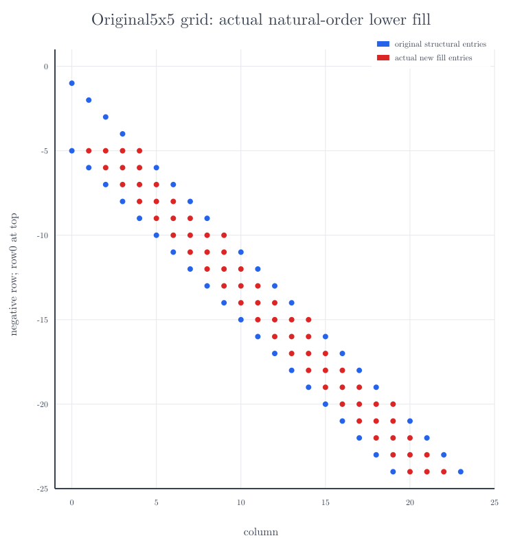
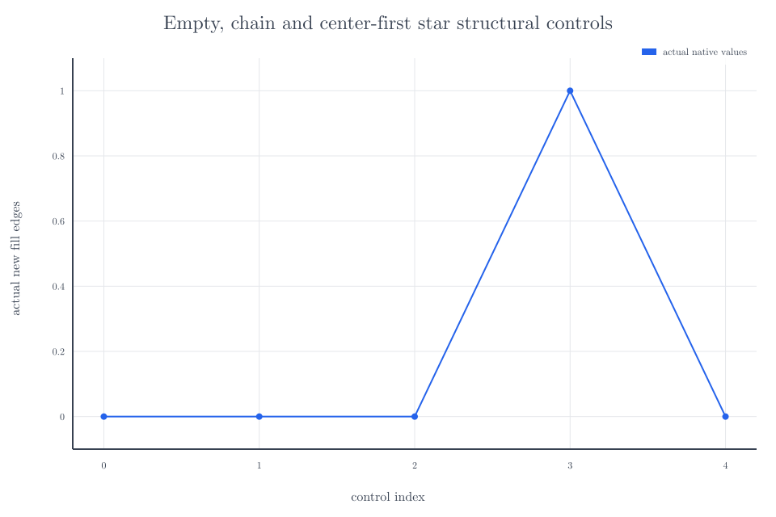
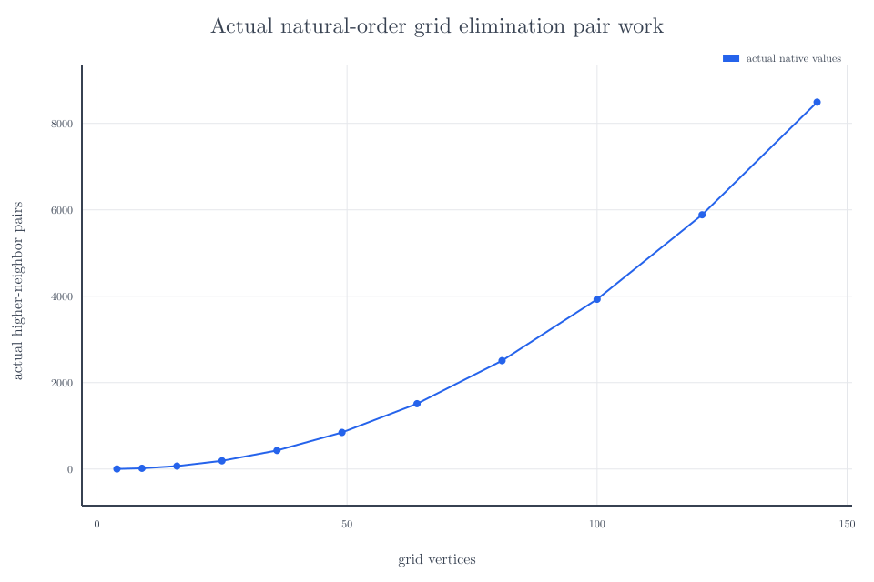

Symbolic Cholesky: actual natural-order structural fill
Abstract
Symbolic elimination connects higher neighbors of each eliminated vertex. Actual inserted fill edges explain the structural lower pattern for the original5 by5 grid, while numerical cancellation and ordering choices remain explicit qualifications.
Mechanism and mathematical scope
At column k collect current neighbors with index greater than k. Emit k in each corresponding lower row, then connect every pair of higher neighbors into a clique. Newly absent pairs are actual fill edges; already connected pairs still cost insertion-test work. Natural ordering is fixed. The result is potential structural nonzero support for a generic SPD matrix, not a guarantee against exact numerical cancellations and not a numerical Cholesky factorization. Ordered sets add logarithmic insertion costs; pair attempts may be cubic in vertex count and fill storage quadratic.
A tiny actual producing history
The table and native concept diagram read the same producing execution. Every block below is a complete editable C++ program.
#include <dm/dm.hpp>
int main() {
namespace a = dm::algorithms;
namespace g = dm::graphics;
std::filesystem::create_directories("build");
auto r = a::symbolic_cholesky_trace({{1, 2}, {0}, {0}});
std::print("| actual eliminated column | current higher neighbors | actual newly inserted edges | " "cumulative pairs |\n| ---: | --- | --- | ---: |\n");
for (const auto &s : r.steps)
std::print("| {} | `{}` | `{}` | {} |\n", s.column, s.higher, s.fill,
s.cumulative_pairs);
std::print("Actual structural lower rows `{}`.\n", r.lower);
g::Diagram concept_diagram(48, 1100);
concept_diagram.node("n0", {0, 0}, "Star pattern centered at column0");
concept_diagram.node("n1", {5, 0},
std::format("{} actual higher-neighbor pairs",
r.pair_tests));
concept_diagram.node("n2", {10, 0},
std::format("Actual new fill edges {}", r.fill));
concept_diagram.edge("n0", "n1").edge("n1", "n2");
concept_diagram.save_svg("build/symbolic_cholesky_tiny.svg");
}| actual eliminated column | current higher neighbors | actual newly inserted edges | cumulative pairs |
|---|---|---|---|
| 0 | [1, 2] | [(1, 2)] | 1 |
| 1 | [2] | [] | 1 |
| 2 | [] | [] | 1 |
Actual structural lower rows [[], [0], [0, 1]].

The retained original experiment
#include <dm/dm.hpp>
int main() {
namespace a = dm::algorithms;
namespace g = dm::graphics;
std::filesystem::create_directories("build");
auto adj = a::symbolic_cholesky_grid();
auto r = a::symbolic_cholesky_run(adj);
std::print("Original5x5 grid: {} input undirected edges, {} actual fill edges, {} off-diagonal factor " "entries.\n\n| actual lower row | structural columns |\n| ---: | --- |\n",
r.input_edges, r.fill.size(), r.factor_entries);
for (std::size_t i = 0; i < r.lower.size(); ++i)
std::print("| {} | `{}` |\n", i, r.lower[i]);
std::vector<double> ox, oy, fx, fy;
for (std::size_t i = 0; i < adj.size(); ++i)
for (int j : adj[i])
if (j < int(i)) {
ox.push_back(j);
oy.push_back(-double(i));
}
for (auto[u, v] : r.fill) {
fx.push_back(u);
fy.push_back(-double(v));
}
auto chart = g::RPlot::create();
chart.points(ox, oy, "original structural entries", {37, 99, 235}, 4).points(fx, fy, "actual new fill entries", {220, 38, 38}, 4).size(760, 800).margins(80, 40, 72, 88).xlim(-1, 25).ylim(-25, 1).title("Original5x5 grid: actual natural-order lower fill").x_label("column").y_label("negative row; row0 at top");
chart.save_svg("build/symbolic_cholesky_original.svg");
}Original5x5 grid: 40 input undirected edges, 64 actual fill edges, 104 off-diagonal factor entries.
| actual lower row | structural columns |
|---|---|
| 0 | [] |
| 1 | [0] |
| 2 | [1] |
| 3 | [2] |
| 4 | [3] |
| 5 | [0, 1, 2, 3, 4] |
| 6 | [1, 2, 3, 4, 5] |
| 7 | [2, 3, 4, 5, 6] |
| 8 | [3, 4, 5, 6, 7] |
| 9 | [4, 5, 6, 7, 8] |
| 10 | [5, 6, 7, 8, 9] |
| 11 | [6, 7, 8, 9, 10] |
| 12 | [7, 8, 9, 10, 11] |
| 13 | [8, 9, 10, 11, 12] |
| 14 | [9, 10, 11, 12, 13] |
| 15 | [10, 11, 12, 13, 14] |
| 16 | [11, 12, 13, 14, 15] |
| 17 | [12, 13, 14, 15, 16] |
| 18 | [13, 14, 15, 16, 17] |
| 19 | [14, 15, 16, 17, 18] |
| 20 | [15, 16, 17, 18, 19] |
| 21 | [16, 17, 18, 19, 20] |
| 22 | [17, 18, 19, 20, 21] |
| 23 | [18, 19, 20, 21, 22] |
| 24 | [19, 20, 21, 22, 23] |

Explicit controls
#include <dm/dm.hpp>
int main() {
namespace a = dm::algorithms;
namespace g = dm::graphics;
std::filesystem::create_directories("build");
std::vector<std::vector<std::vector<int>> > graphs{{}, {{}}, {{1}, {0}},
{{1, 2}, {0}, {0}},
{{1}, {0, 2}, {1}}};
std::vector<double> x, y;
std::print("| control | input edges | actual new fill edges | pair tests |\n| ---: | ---: | ---: | ---: " "|\n");
for (std::size_t i = 0; i < graphs.size(); ++i) {
auto r = a::symbolic_cholesky_run(graphs[i]);
x.push_back(i);
y.push_back(r.fill.size());
std::print("| {} | {} | {} | {} |\n", i, r.input_edges, r.fill.size(),
r.pair_tests);
}
auto plot = g::RPlot::create();
plot.lines(x, y, "actual native values", {37, 99, 235}).points(
x, y, {37, 99, 235}, 4).title("Empty, chain and center-first star structural controls").x_label("control index").y_label("actual new fill edges");
plot.save_svg("build/symbolic_cholesky_controls.svg");
}| control | input edges | actual new fill edges | pair tests |
|---|---|---|---|
| 0 | 0 | 0 | 0 |
| 1 | 0 | 0 | 0 |
| 2 | 1 | 0 | 0 |
| 3 | 2 | 1 | 1 |
| 4 | 2 | 0 | 0 |

Actual selected work and sensitivity
#include <dm/dm.hpp>
int main() {
namespace a = dm::algorithms;
namespace g = dm::graphics;
std::filesystem::create_directories("build");
std::vector<double> x, y;
std::print("| grid side | vertices | input edges | actual fill edges | pair attempts |\n| ---: | ---: | " "---: | ---: | ---: |\n");
for (std::size_t side = 2; side <= 12; ++side) {
auto r = a::symbolic_cholesky_run(a::symbolic_cholesky_grid(side));
x.push_back(side * side);
y.push_back(r.pair_tests);
std::print("| {} | {} | {} | {} | {} |\n", side, side * side,
r.input_edges, r.fill.size(), r.pair_tests);
}
auto plot = g::RPlot::create();
plot.lines(x, y, "actual native values", {37, 99, 235}).points(
x, y, {37, 99, 235}, 4).title("Actual natural-order grid elimination pair work").x_label("grid vertices").y_label("actual higher-neighbor pairs");
plot.save_svg("build/symbolic_cholesky_work.svg");
}| grid side | vertices | input edges | actual fill edges | pair attempts |
|---|---|---|---|---|
| 2 | 4 | 4 | 1 | 2 |
| 3 | 9 | 12 | 8 | 17 |
| 4 | 16 | 24 | 27 | 68 |
| 5 | 25 | 40 | 64 | 190 |
| 6 | 36 | 60 | 125 | 430 |
| 7 | 49 | 84 | 216 | 847 |
| 8 | 64 | 112 | 343 | 1512 |
| 9 | 81 | 144 | 512 | 2508 |
| 10 | 100 | 180 | 729 | 3930 |
| 11 | 121 | 220 | 1000 | 5885 |
| 12 | 144 | 264 | 1331 | 8492 |

API and interpretation
Neighbor IDs are completely checked; patterns are symmetrized by union, loops ignored and duplicates removed. The solver performs no ordering optimization and cannot certify positive definiteness from an adjacency pattern. Original and actual fill coordinates are separated directly from native producer outputs; no report-side elimination reconstructs the red points.
Reusable producers, fixtures and histories live in the canonical C++ library. Captured records own their values and do not come from a separate report replay. Selected counters and record/scalar policies are specified at their API boundaries; they are not peak-byte or wall-time budgets. Synthetic structural inputs are controlled fixtures for these mechanisms.
References
- Rose, Triangulated Graphs and the Elimination Process, Journal of Mathematical Analysis and Applications32 (1970),597-609
Verified in the shared ten-document batch: 72 scoped native cases;20 directly
instrumented ASan/UBSan cases;82 executable public examples;327/327 definitions
across23 full scopes;10 hovers;3797 independent records/1769203 checks;frozen
valid-input comparisons across all ten families with cyclic-tree validation
correction recorded;12 checkout/installed standalone headers and linked
ten-family consumer;40 executed programs and40 inspected figures with both
exports. Receipts:
/mnt/projects/datamunge/build/mepml-conversion/batch-384-393/.